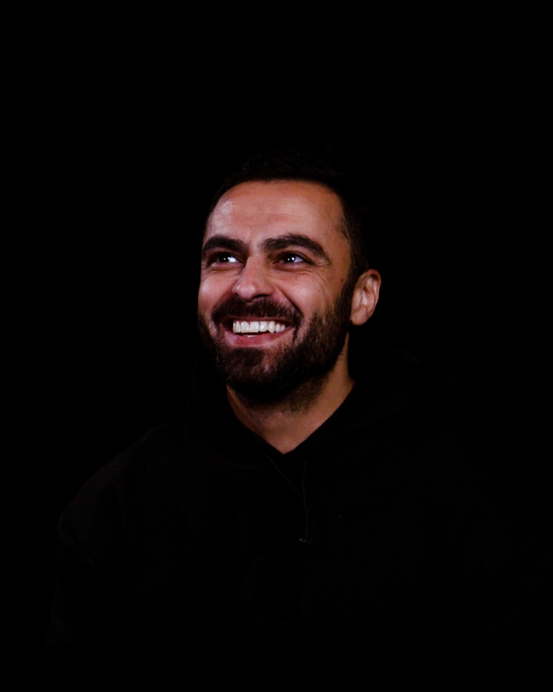

01 / 08Watch film ↗
01 / 08Watch film ↗Victoria University
International Paramedics Day
A portrait of the people behind paramedicine.
Digital producer
& programme manager
Melbourne, Australia
Creative work. Real-world delivery.
Ideas into stories.
People into possibility.
01 / Perspective
I bring stories, teams and programmes together. My work moves between film production, education and partnerships—with the same focus on understanding people and making things happen.
02 / Selected work
Education, technology and music.
Eight films. Different ways to tell a story.
01 / 08Watch film ↗Victoria University
A portrait of the people behind paramedicine.
 02 / 08Watch film ↗
02 / 08Watch film ↗Department of Education
A look at the possibilities of tomorrow’s workplace.
 03 / 08Watch film ↗
03 / 08Watch film ↗Victoria University
Making a different approach to learning easy to understand.
 04 / 08Watch film ↗
04 / 08Watch film ↗Wyndham Tech School
Bringing emerging technology into the classroom.
 05 / 08Watch film ↗
05 / 08Watch film ↗Cylo ft Blue Moon
A cinematic collaboration with Melbourne artists.
 06 / 08Watch film ↗
06 / 08Watch film ↗YVE GOLD ft Julian Ak
Music, performance and visual storytelling.
 07 / 08Watch film ↗
07 / 08Watch film ↗Julian A.K
An artist-led story told through moving image.
 08 / 08Watch film ↗
08 / 08Watch film ↗Cylo
Rhythm and energy, translated to screen.

Leo Houssami / Melbourne03 / Behind the work
I’m a Melbourne-based digital producer and programme manager with experience across universities, technology education, commercial partnerships and community services.
I’ve led multimedia production at Victoria University, delivered hands-on STEM programmes at Wyndham Tech School, and built partnership workflows at Easygo. Across those settings, I connect the creative brief with the people, processes and practical detail needed to deliver it.
Fluent in English and Arabic, I bring a cross-cultural perspective and a collaborative approach to every project.
View my résumé04 / How I contribute
Video production, editing, photography, podcasts and accessible learning content. Clear stories shaped for their audience.
Coordinating teams, partners and learning experiences. Making complex work manageable, inclusive and purposeful.
Practical processes that keep work moving. Connecting tools, automating routine tasks and keeping the details in hand.
05 / Experience
2025 — 2026
Easygo
Coordinated commercial partnerships across legal, marketing and operations. Built automated partner onboarding and reporting workflows with HubSpot and n8n.
2023 — 2025
Victoria University
Led a production team delivering learning, research and community content across campuses. Produced the weekly People of VU podcast and developed accessible publishing workflows.
2021 — 2022
Wyndham Tech School
Delivered immersive programmes in VR, robotics, game design and drones. Supported diverse learners, including the FLIP specialist cohort, and contributed to equipment funding submissions.
2019 — 2021
atWork Australia
Supported jobseekers through assessment, coaching and referral coordination. Worked with Arabic-speaking clients and people facing complex barriers to employment.
2015 — 2019
Diakrit International
Produced real estate content to tight turnaround times, coordinated location logistics and trained colleagues in production standards.
Education & development
Deakin University · 2017
Hales Institute of Business · 2008
Google · 2023
06 / Start a conversation
For creative, programme and partnership opportunities.
leohoussami@gmail.com